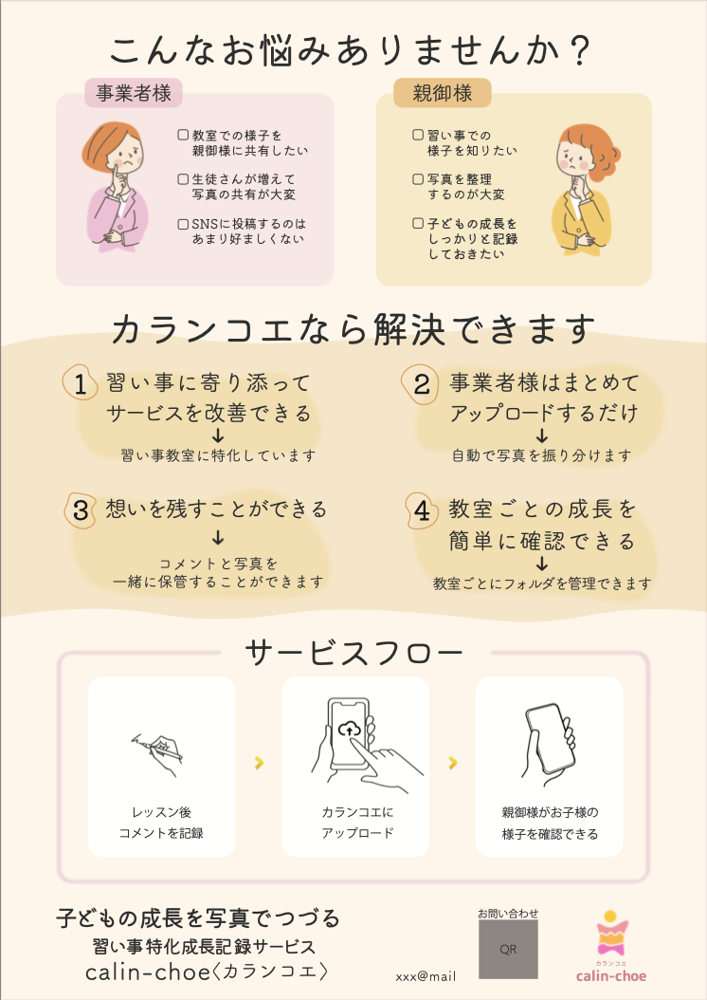

サービスの特徴である、写真にコメントを添えてその時の想いも残すことができる、ということを表面では表現しました。写真に添えるコメントを手書きにすることで、本当に子どもがサービスを使って思い出を残したように感じられるようにしました。また、習い事教室をメインターゲットにしたサービスということだったので、メインメッセージは先生に向けての言葉にしました。
サービスの特徴である、写真にコメントを添えてその時の想いも残すことができる、ということを表面では表現しました。写真に添えるコメントを手書きにすることで、本当に子どもがサービスを使って思い出を残したように感じられるようにしました。また、習い事教室をメインターゲットにしたサービスということだったので、メインメッセージは先生に向けての言葉にしました。

裏面では、悩んでいることがないかをまず問いかけ、その後にそれを解決できるようなサービスのメリットを載せることで、サービスを利用したときのことを想像しやすくしました。サービスフローは３つに絞ることで、サービスが簡単に利用することができるものであるという印象を与えられるようにしました。また、裏面にサービス内容と名前を簡単にまとめた文章を配置することで、チラシを机などに置いたときに裏面が上になっていてもなんのサービスなのかがすぐにわかるようにしました。

ロゴは違う色を重ねることで、いろいろな思い出を重ねていくことを表現しました。また、手や脚など、左右差を出すことで成長している過程を表現しました。